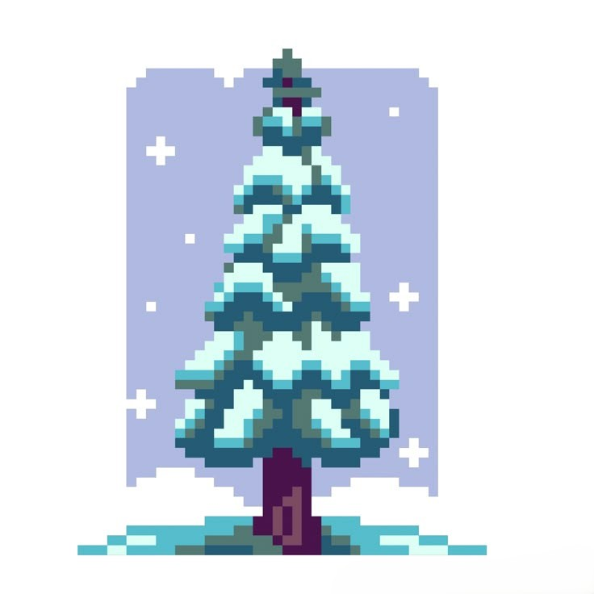

What Are Gymnosperms?
Gymnosperms are seed-producing plants that do not form flowers or fruits. Their seeds are exposed, often in cones, making them quite different from angiosperms.


Pine Tree

Fir Tree

Cypress Tree
Seed Type
Gymnosperm seeds are not enclosed in fruit. Instead, they're often found on cone scales.
Leaf Structure
Needle-like or scale-like leaves reduce water loss—an adaptation to dry or cold climates.
Common Types
Includes pines, firs, spruces, and cycads. Many are important for timber and paper production.